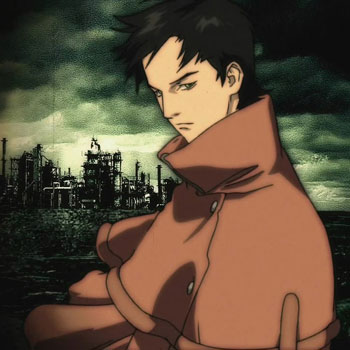

RE-L124c41+ – RE-L MEYER
Reel Meyer
ID Number: re-l124C41+
Pun: "Real one to foresee for one"
"Someone real foresees..."
››› The First (Proxy) – Proxy One, that is, the reunited Vincent and Ergo Proxy;
››› The Chosen One – if we translate "one" in the tradition of The Matrix;
››› someone equally real.
re-l124C41+ – as an homage and allusion to Hugo Gernsback's science fiction novel "Wreck-It Ralph 124C 41+"
VINCENT LAW

Perhaps the name for this character was chosen "blindly." But "Ergo Proxy" is full of coincidences that, upon closer examination, reveal both meaningful and ambiguous meanings.The name Vincent is associated with the patron saint of winemaking, and its origin is linked to the word "wine" (vino).
The name Vincent itself is derived from the Latin vinco, meaning "to conquer, overcome, surpass"; vincens (from the stem vincent), meaning "conquering" (present participle of the active voice). The surname Law translates as "law," "court," "right," or "rule."
Accordingly, the full name can be translated as follows: Vincent Law – "conquering the law," "overcoming the law"; or, alternatively, "surpassing the law," "one who is above the law."
Some details in Vincent Law's appearance bring to mind Vincent Valentine, the hero of the famous game "Final Fantasy VII" (as well as the film "Advent Children" and the game "Dirge of Cerberus").
PINO
Pino herself and her name play on the character Pinocchio, with whom she shares some physical similarities (Pino resembles a doll) and a shared story: her transformation into a human. The name "Pino" sounds similar to "piano," the name of the musical instrument she plays... if there's a piano nearby, and in its absence, she plays the melodica, which, however, is only half related to the piano and is a keyboard-wind instrument. The name "Pino" is also an homage to Pinoko from Osamu Tezuka's manga "Black Jack." Pino's character is partly inspired by Pinoko's.
In science fiction, there's another "Pinocchio robot"—the protagonist of Steven Spielberg's film "Artificial Intelligence: AI" (2001).
PINO is also an operating system platform for humanoid robots.
.svg)